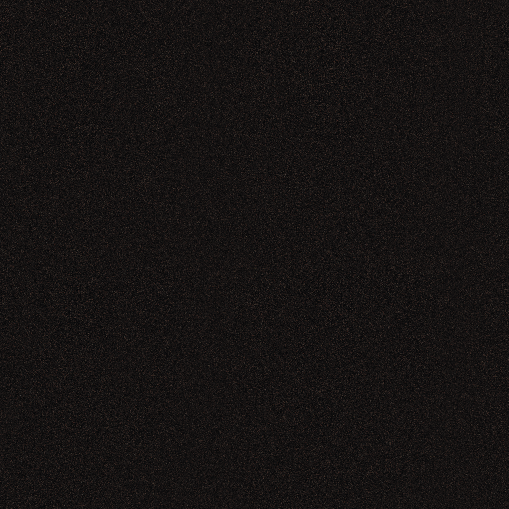
01 / Asphalt
4K dry/wet PBR, detail normal, 25% puddle mask.
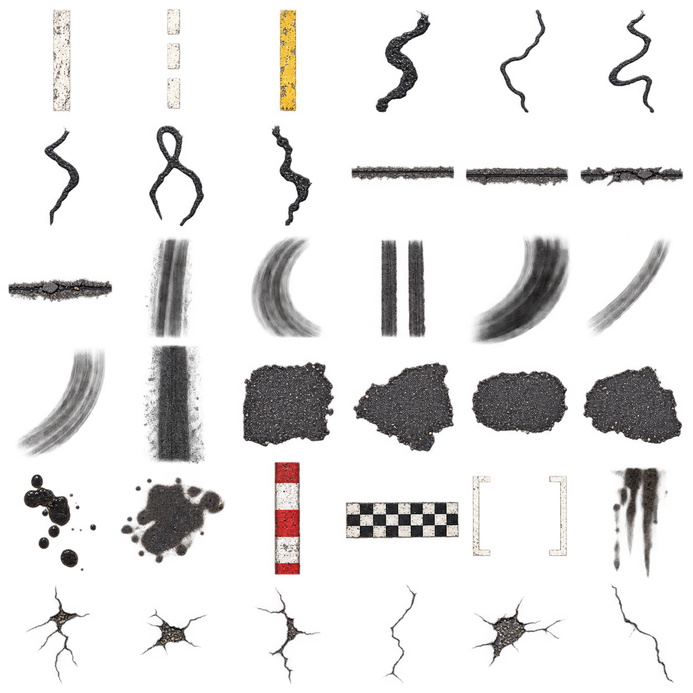
02 / Road decals
36 labelled UV cells, real-world sizes, normal/roughness/ORM companions.
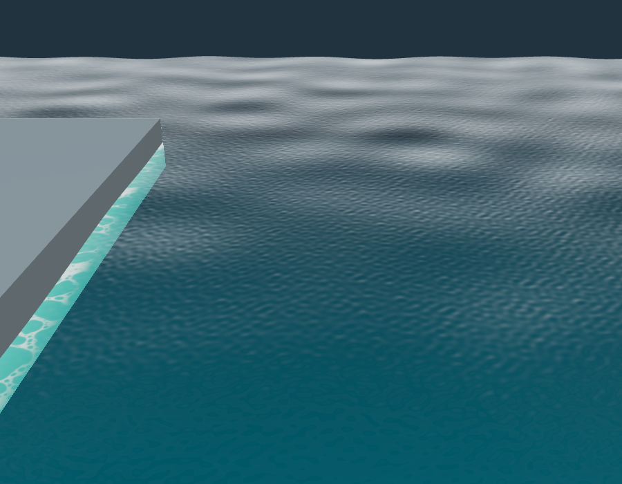
03 / Harbor water
Dual normal maps, foam, caustics, depth LUT and tested GLSL material.
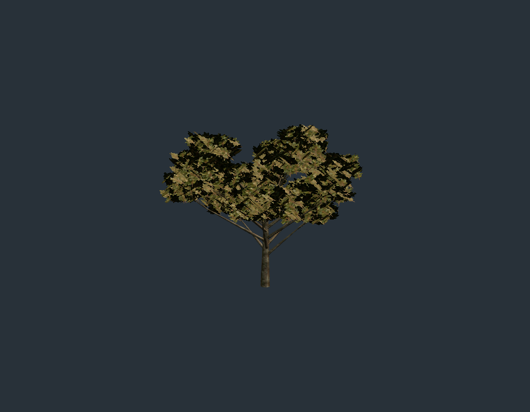
04 / Ridge trees
Three species, three LODs each, wind/backlight shader and eight-view imposters.
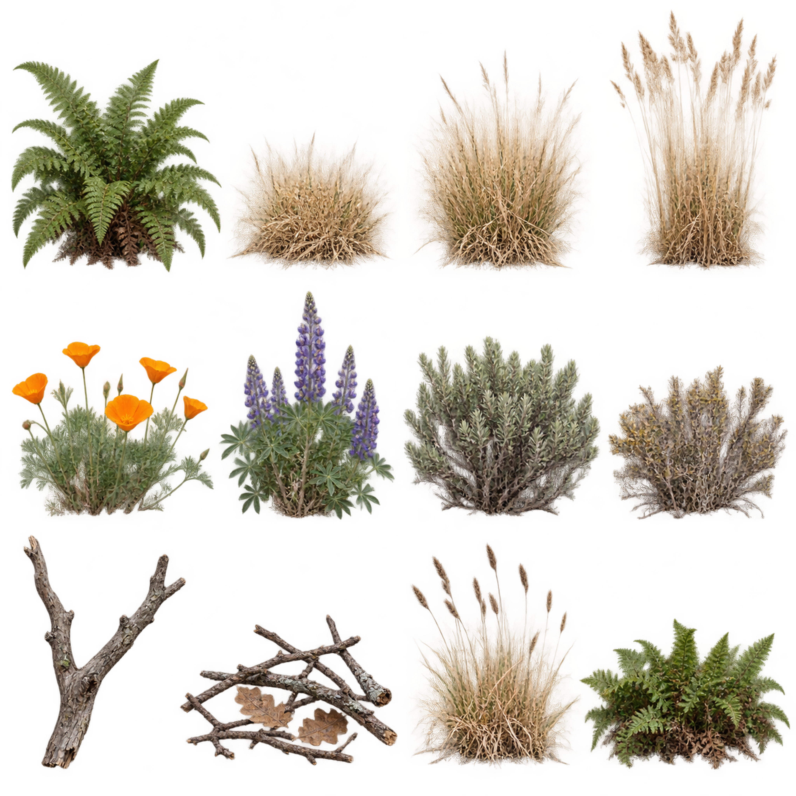
05 / Ground cover
Five scanned ground sets, 12 card clusters, six rock meshes and shoulder weights.
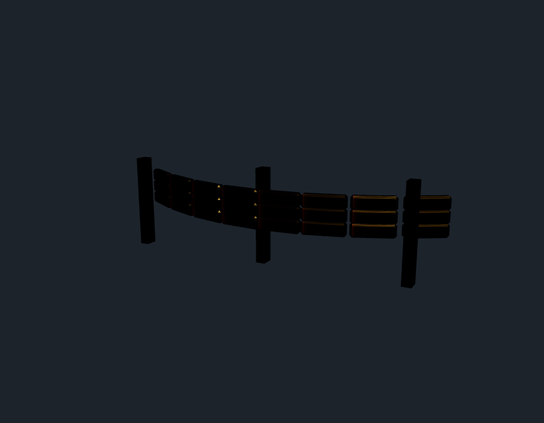
06 / Trackside kit
22 prop variants, three LODs, shared 4K trim and route placement helper.
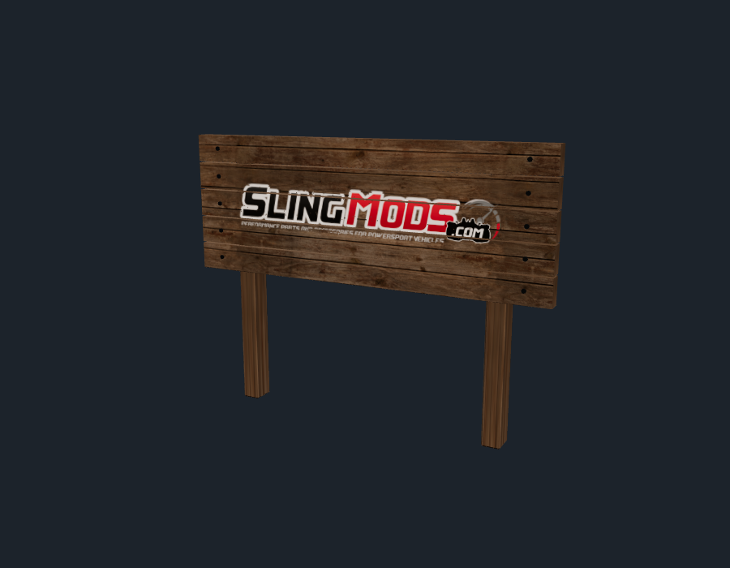
07 / Wooden sign
Official logo, painted/routed versions, 2 LODs, tested 12% padding.
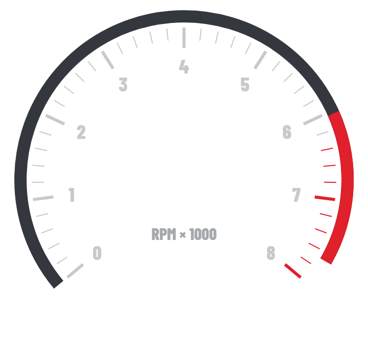
08 / HUD art
45 SVG components with 2× PNG exports and embedded licensed typeface.
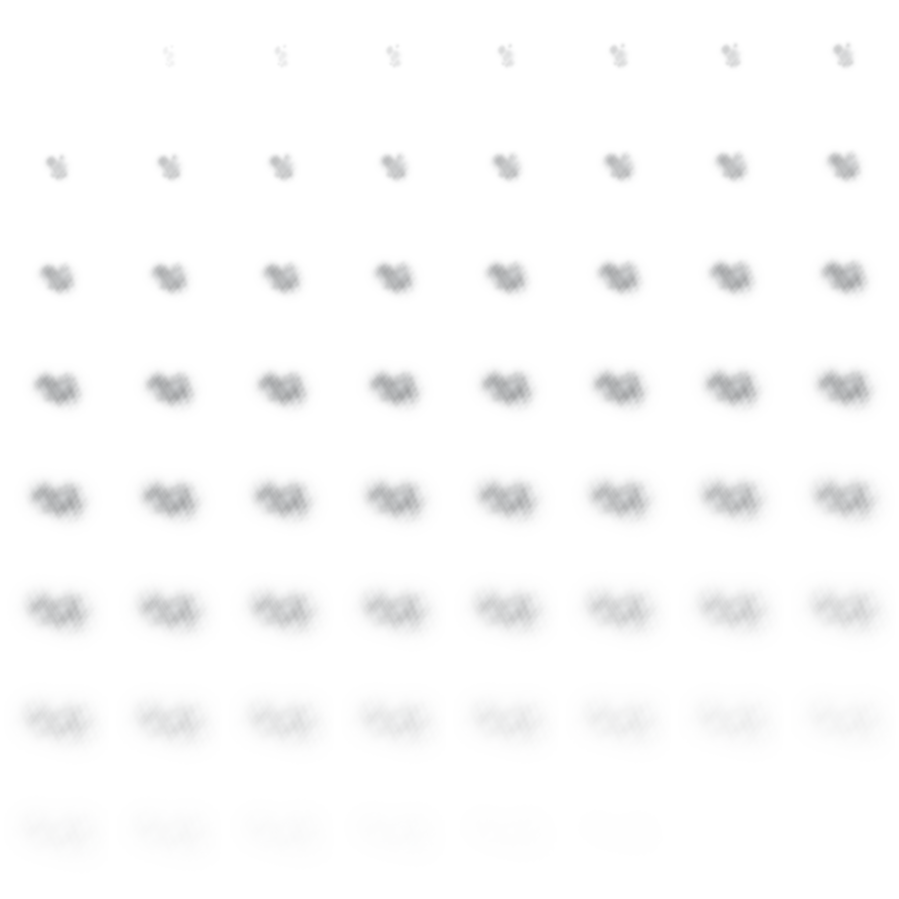
09 / VFX
14 timed flipbooks plus particles, lens textures and a 64³ noise volume.
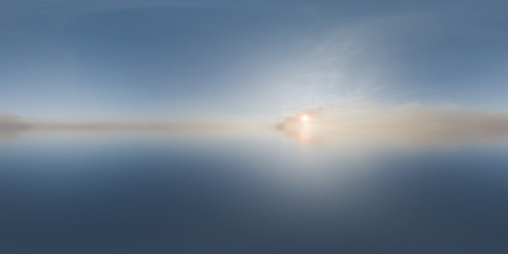
10 / Skies
Five 8K HDRs, 1K inputs, prefiltered EXRs and lighting metadata.
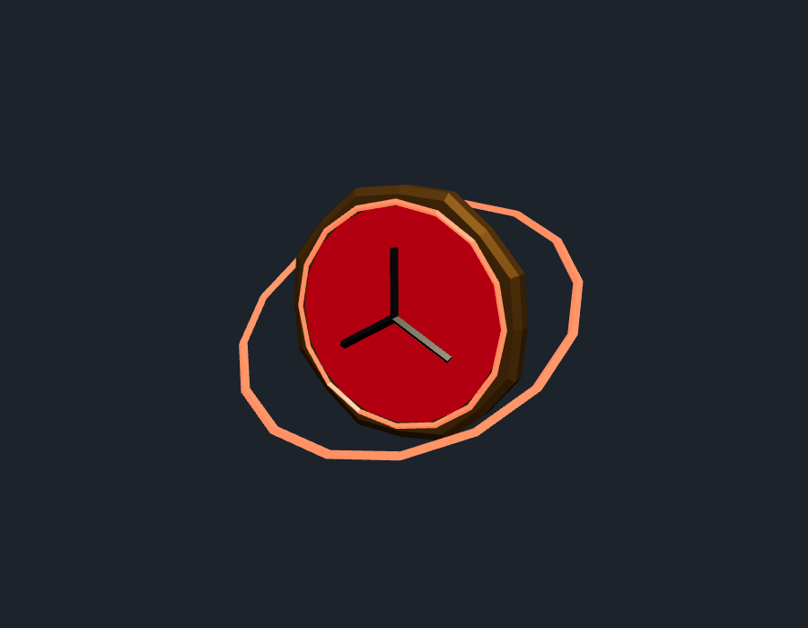
11 / Points token
Four low-poly animated pickups and runtime scale/flash/shard animation.